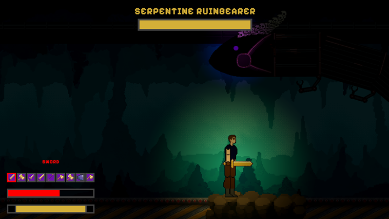

Hi, my name is Jack. I am currently a student at the University of Liverpool studying a Computer Science BSc degree programme. Currently, I am enthusiastic about programming, exploring the possibilities of Artificial Intelligence and robotics, while leaving a lasting impact. This website contains a portfolio of all my projects and notable achievements so far. If what you see here are of any interest, you can find my GitHub, LinkedIn and email in the navigation bar. Note: this website is still a work in progress, so there may be some features yet to be implemented.
For a week-long work experience placement during sixth form, I had the wonderful opportunity to shadow at Sony Interactive Entertainment (SIE). Here, I learned of all the distinct departments and their roles in the process of developing a videogame, including game testing, QA, media, programming and finance, and this put into perspective for me how a large-scale company like Sony manages software development, and validated my enthusiasm to pursue a career in computer science.
Earlier in my academic career, I also undertook another week-long work experience placement, this time at a local primary school. Here,

Saviour: Alienation" was a 2D, side-scrolling, survival action-adventure roguelike role-playing game, designed in a pixelated art-style, and this was my task for my Computer Science NEA. It was developed using the Unity game engine, so I had to learn the C# language while creating the game itself, while simultaneously documenting all my decisions in a 531-page report.
To date, this has been my most substantial project. You can learn more about the project here:
In October 2026, I participated in the national UKIEPC challenge via my university, and was part of a team of three people on a single computer. My role was to devise alternate solutions to the series of challenges assigned whilst my other two team member focused on others. For this competition, I had to learn to use data structures I wasn't previously confident with in Python, for example dictionaries,
This weekend, I will be competing in a hackathon hosted by Beat Modules, a gamified platform used by secondary schools for PSHE lessons. If you are reading this, please check the website again after the 21st November to view the full section.
In my time at the University of Liverpool, I have become a course rep, so I have been responsible for retrieving feedback from students in my cohort and attending essential meetings regarding our course.
During my time at sixth form, I successfully applied to be a deputy head student within my school's Student Leadership Team. Our team's primary focus was raising £600.00 for the end-of-year prom, and so we had to organise these events while balancing this responsibility with our A-Level studies. This involved coordinating bake sales